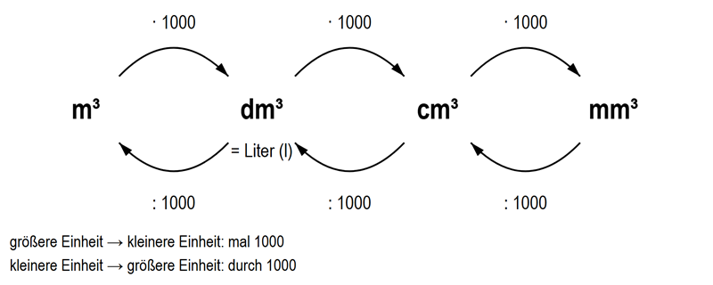
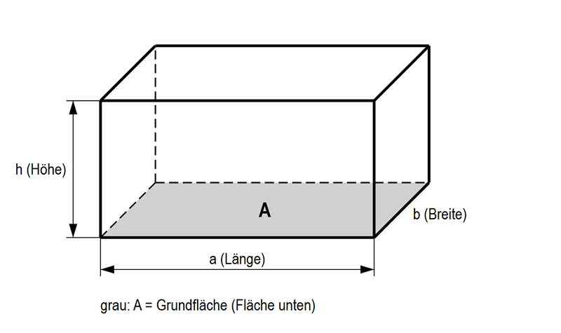
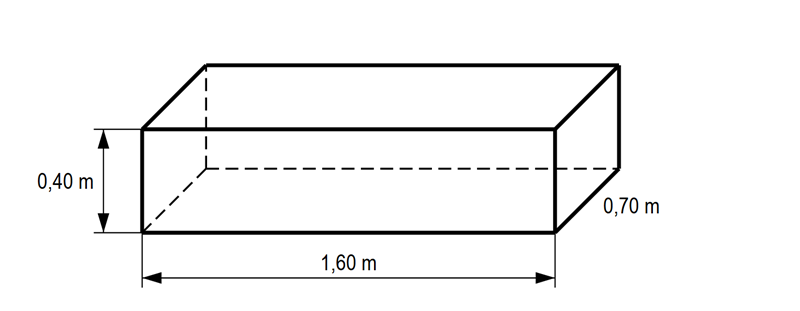
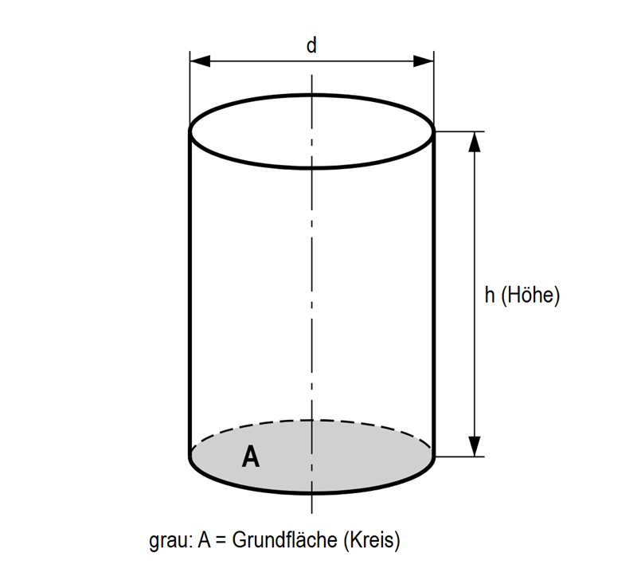
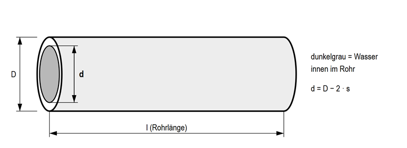

Volumen
Heute lernst du: wie du Volumen und Liter umrechnest, wie viel Wasser in eine Badewanne, einen Speicher oder ein Rohr passt, und wie viel Wasser eine Heizungsanlage braucht.
So arbeitest du: Lies zuerst den grauen Infokasten. Mach dann die Aufgaben darunter. Die Antworten findest du im Infokasten. Fertig? Tippe bei jeder Aufgabe auf „Prüfen“. Bessere deine Fehler aus.
Die Kästen mit Strichellinie und ★★★ („Mehr wissen“ und „Vertiefung“) sind erweiterte Aufgabenstellungen.
Du brauchst: Taschenrechner. Wir rechnen mit π = 3,14. Schreib bei jeder Zahl die Einheit dazu.
Runden: Runde auf 2 Kommastellen. Rechne mit dem gerundeten Ergebnis weiter. Das Zeichen ≈ heißt „ungefähr gleich“ (gerundet).
Infokasten A: Wie viel passt hinein? (Volumeneinheiten)
|
Das Volumen V (Rauminhalt) sagt, wie viel in einen Körper hineinpasst. Man misst es in Kubikmeter (m³), Kubikdezimeter (dm³), Kubikzentimeter (cm³) und Kubikmillimeter (mm³). 1 m³ ist ein Würfel mit 1 m mal 1 m mal 1 m. 1 m = 10 dm. Darum passen 10 · 10 · 10 = 1000 kleine Würfel mit 1 dm³ hinein. Also: 1 m³ = 1000 dm³. Wasser misst man meistens in Liter (l). 1 Liter ist genau so viel wie 1 dm³.  Stellentafel: Jede Einheit hat 3 Kästchen. In jedes Kästchen kommt eine Ziffer. Das Komma steht immer rechts von der Einheit, die du hinschreibst.
Beispiele: 2 m³ = 2000 dm³ = 2000 l | 750 cm³ = 0,75 dm³ = 0,75 l | 1 l = 1000 cm³ Merke: Bei Volumen ist der Schritt immer 1000. 1 dm³ = 1 Liter. 1 m³ = 1000 Liter. | |||||||||||||||||||||||||||||||||
Aufgabe 1 ★ leicht – Die Stellentafel
Lies Infokasten A. Tipp die Ziffern in die Stellentafel. Tipp dann das Ergebnis ein (nur die Zahl, die Einheit steht schon da).
| Verwandle | m³ | dm³ = l | cm³ | Ergebnis | ||||||
|---|---|---|---|---|---|---|---|---|---|---|
| a) 1,5 m³ → dm³ | dm³ | |||||||||
| b) 4,2 dm³ → cm³ | cm³ | |||||||||
| c) 680 dm³ → m³ | m³ | |||||||||
Aufgabe 2 ★ leicht – Umrechnen in Liter
Lies Infokasten A. Rechne um. Tipp: große Einheit → kleine Einheit: mal 1000. Kleine Einheit → große Einheit: durch 1000. 1 dm³ = 1 l. Tipp nur die Zahl ein.
| a) 2,5 m³ = | l | |
| b) 0,4 m³ = | dm³ | |
| c) 8000 cm³ = | l | |
| d) 75 l = | m³ | |
| e) 1,2 l = | cm³ | |
| f) 500 cm³ = | l |
Aufgabe 3 ★★ mittel – Fehler finden
Ein Lehrling hat umgerechnet. Nicht alles stimmt.
Kreuze an: richtig (R) oder falsch (F). Ist es falsch, tipp das richtige Ergebnis ein (nur die Zahl). Ist es richtig, lass das Feld leer.
| Rechnung vom Lehrling | R | F | richtig ist |
|---|---|---|---|
| 3 m³ = 300 dm³ | dm³ | ||
| 1 dm³ = 1 l | |||
| 2500 cm³ = 25 l | l | ||
| 0,5 m³ = 500 l |
Welchen Fehler hat der Lehrling gemacht? Kreuze an.
| Er hat mit 100 gerechnet statt mit 1000. | |
| Er hat mit 10 gerechnet statt mit 100. | |
| Er hat Liter und dm³ verwechselt. |
Infokasten B: Wie viel Wasser passt in die Wanne? (Quader)
|
Ein Quader ist ein Körper mit 6 rechteckigen Seiten. Beispiele: Behälter, Spülkasten, Öltank. Eine Badewanne oder Duschtasse rechnen wir ungefähr wie einen Quader.  V = a · b · h (Länge mal Breite mal Höhe) Du kannst auch sagen: V = A · h. A = a · b ist die Grundfläche (die Fläche unten). Trick für Liter: Rechne alle Maße zuerst in dm um. Dann bekommst du dm³. Und dm³ sind Liter. Beispiel: Ein Wasserbehälter ist 1,2 m lang, 0,5 m breit und 0,8 m hoch. in dm: 12 dm, 5 dm, 8 dm V = 12 dm · 5 dm · 8 dm = 480 dm³ = 480 l Merke: Rechne alle Maße in dm um. Dann bekommst du gleich Liter. |
Aufgabe 4 ★ leicht – Die Badewanne
Eine Kundin fragt: „Wie viel Wasser brauche ich für ein Bad?“ Die Wanne ist innen ungefähr ein Quader. Das Wasser steht 0,40 m hoch.

Lies Infokasten B. Rechne in Schritten. Tipp nur die Zahlen ein.
| Länge in dm = | dm | |
| Breite in dm = | dm | |
| Höhe in dm = | dm | |
| V = | l |
Aufgabe 5 ★★ mittel – Achtung, Einheiten!
a) Ein Spülkasten ist innen 40 cm breit, 1,2 dm tief und 0,25 m hoch.
Rechne zuerst alle Maße in dm um. Rechne dann, wie viele Liter hineinpassen. Tipp nur die Zahlen ein.
Tipp: 1 m = 10 dm 1 dm = 10 cm (cm → dm: durch 10; m → dm: mal 10)
| 40 cm = | dm | |
| 0,25 m = | dm | |
| V = | l |
b) Der Abfluss von einer Duschtasse ist verstopft. Die Duschtasse ist 90 cm mal 90 cm. Das Wasser steht 3 cm hoch.
Wie viele Liter Wasser musst du ausschöpfen?
| 90 cm = | dm | |
| 3 cm = | dm | |
| V = | l |
Infokasten C: Wie viel passt in den Speicher? (Zylinder)
|
Ein Zylinder ist ein runder Körper. Oben und unten ist ein Kreis. Beispiele: Warmwasserspeicher (Boiler), Pufferspeicher, Rohr.  Die Grundfläche ist ein Kreis. Den rechnest du wie bei den Flächen: A = d · d · 3,14 : 4 V = A · h (Kreisfläche mal Höhe) Beispiel: Ein Speicher hat innen d = 50 cm und h = 1,20 m. in dm: d = 5 dm, h = 12 dm A = 5 dm · 5 dm · 3,14 : 4 = 19,625 dm² ≈ 19,63 dm² V = 19,63 dm² · 12 dm = 235,56 dm³ = 235,56 l Merke: Zylinder = Kreisfläche mal Höhe. |
Aufgabe 6 ★ leicht – Quader oder Zylinder?
Lies Infokasten B und C. Wie rechnest du das Volumen? Kreuze an.
| Gegenstand | Quader | Zylinder |
|---|---|---|
| Warmwasserspeicher (Boiler) | ||
| Badewanne | ||
| Kupferrohr | ||
| rechteckiger Öltank | ||
| Spülkasten | ||
| Pufferspeicher |
Aufgabe 7 ★★ mittel – Der Warmwasserspeicher
Ein Warmwasserspeicher hat innen d = 60 cm und h = 1,50 m. Der Kunde fragt: „Wie viele Liter hat mein Speicher?“
Lies Infokasten C. Rechne in Schritten. Runde auf 2 Kommastellen. Tipp nur die Zahlen ein.
| d in dm = | dm | |
| h in dm = | dm | |
| A = | dm² | |
| V = | l |
Aufgabe 8 ★★ mittel – Wie groß im Raster?
Der Speicher aus Aufgabe 7 (d = 60 cm, h = 1,50 m) soll im Raster gezeichnet werden: 1 Kästchen = 10 cm in echt (Maßstab 1:20).
Rechne aus, wie viele Kästchen es sind. Tipp nur die Zahlen ein.
| Breite: 60 cm : 10 cm = | Kästchen | |
| Höhe: 150 cm : 10 cm = | Kästchen | |
| Radius = Breite : 2 = | Kästchen |
Infokasten D: Wie hoch muss der Behälter sein? (Höhe rückwärts rechnen)
|
Manchmal kennst du das Volumen und die Grundfläche. Dann rechnest du die Höhe aus: h = V : A Beispiel 1 (Zylinder): Ein Speicher soll 200 l fassen. Er hat innen d = 5 dm. A = 5 dm · 5 dm · 3,14 : 4 = 19,63 dm² h = 200 dm³ : 19,63 dm² = 10,19 dm ≈ 1,02 m Beispiel 2 (Quader): Ein Behälter hat unten 6 dm mal 4 dm. Er soll 360 l fassen. A = 6 dm · 4 dm = 24 dm² h = 360 dm³ : 24 dm² = 15 dm Achtung: V in Liter (= dm³) und A in dm². Dann bekommst du h in dm. Merke: Höhe = Volumen durch Grundfläche. |
Aufgabe 9 ★★ mittel – Wie hoch?
a) Ein Boiler soll 300 l fassen. Er hat innen d = 6 dm.
Lies Infokasten D. Wie hoch muss er innen sein? Runde auf 2 Kommastellen. Tipp nur die Zahlen ein.
| A = | dm² | |
| h = | dm |
b) Ein Behälter hat unten 8 dm mal 5 dm. Er soll 600 l fassen.
Wie hoch muss er sein? Tipp das Ergebnis in dm und in m ein.
| A = | dm² | |
| h = | dm | |
| h in m = | m |
Infokasten E: Wie viel Wasser ist im Rohr? (Rohrinhalt)
|
Ein Rohr ist ein langer, dünner Zylinder. Das Wasser ist innen. Darum rechnest du mit dem Innendurchmesser d, nicht mit D.  So rechnest du: 1. Innendurchmesser: d = D − 2 · s 2. d und die Rohrlänge l in cm umrechnen. 3. Fläche innen: A = d · d · 3,14 : 4 (in cm²) 4. V = A · l (in cm³). Dann : 1000, so bekommst du Liter. Beispiel: Kupferrohr 18 x 1 (D = 18 mm, s = 1 mm), 10 m lang d = 18 mm − 2 · 1 mm = 16 mm = 1,6 cm l = 10 m = 1000 cm A = 1,6 cm · 1,6 cm · 3,14 : 4 = 2,0096 cm² ≈ 2,01 cm² V = 2,01 cm² · 1000 cm = 2010 cm³ = 2,01 l Merke: Beim Rohrinhalt rechnest du mit dem Innendurchmesser d. |
Aufgabe 10 ★★ mittel – Das Kupferrohr
Ein Kupferrohr 28 x 1,5 ist 12 m lang. Wie viel Wasser ist darin?
Lies Infokasten E. Rechne in Schritten. Runde auf 2 Kommastellen. Tipp nur die Zahlen ein.
Tipp: Bei d rechnest du zuerst 2 · s. 1 cm = 10 mm 1 m = 100 cm
| d = | cm | |
| l in cm = | cm | |
| A = | cm² | |
| V = | cm³ | |
| in Liter = | l |
Ein Kollege rechnet mit D = 28 mm. Ist sein Ergebnis zu groß oder zu klein? Kreuze an.
| zu groß | zu klein | gleich |
Infokasten F: Rohrinhalt aus der Tabelle (Wasserinhalt in l/m)
|
Schneller geht es mit der Rohrtabelle. Dort steht, wie viele Liter Wasser in 1 m Rohr passen. Die Einheit ist l/m (Liter pro Meter). Mittelschwere Gewinderohre
V = Länge in m · Wasserinhalt in l/m Beispiel: Gewinderohr DN 32, 8 m lang → V = 8 m · 1,01 l/m = 8,08 l Merke: Für die Tabelle setzt du die Länge immer in Meter ein. |
Aufgabe 11 ★ leicht – Mit der Tabelle rechnen
Lies Infokasten F. Eine Stange ist 6 m lang. Rechne die Länge in m um. Such den Wasserinhalt (l/m) in der Tabelle. Rechne dann V. Runde auf 2 Kommastellen. Tipp nur die Zahlen ein.
Tipp: „1″“ ist eine Zoll-Angabe. Du findest sie in der Spalte Zoll.
| Rohr | Länge | Länge in m | l/m | V in l |
|---|---|---|---|---|
| DN 20 | 15 m | |||
| DN 40 | 250 cm | |||
| DN 50 | 2 Stangen | |||
| 1″ | 3500 mm |
Aufgabe 12 ★★ mittel – Wie viel Wasser braucht die Heizung? (Füllmenge)
Ihr füllt eine neue Heizungsanlage mit Wasser. Der Kunde fragt: „Wie viel Wasser kommt da hinein?“
• Vorlauf und Rücklauf: Gewinderohr DN 25, je 18 m lang
• 5 Heizkörper mit je 9 l Inhalt
• Kessel mit 6 l Inhalt (steht auf dem Typenschild, das ist das Schild mit den Daten am Gerät)
Rechne in Schritten. Nimm die Tabelle aus Infokasten F. Tipp nur die Zahlen ein.
| Rohr gesamt = | m | |
| Leitungen = | l | |
| Heizkörper = | l | |
| Kessel = | l | |
| gesamt = | l |
Was sagst du dem Kunden? Kreuze an.
| „In Ihre Heizung kommen ungefähr 36 Liter Wasser.“ | |
| „In Ihre Heizung kommen ungefähr 72 Liter Wasser.“ | |
| „In Ihre Heizung kommen ungefähr 720 Liter Wasser.“ |
Mehr wissen ★★★
|
1. Durchmesser rückwärts rechnen: Du kennst V und h und suchst d. Zuerst A = V : h. Dann d = √(A · 4 : 3,14) (√ = Wurzel. Taschenrechner: zuerst A · 4 : 3,14 rechnen, dann die Taste √ drücken.) Beispiel: 400 l, h = 14 dm → A = 400 : 14 = 28,57 dm² → 28,57 · 4 : 3,14 = 36,39 → √36,39 = 6,03 dm ≈ 60 cm 2. Oberfläche vom Quader: Ein Quader hat 6 Seiten. Je 2 sind gleich groß. O = 2 · a · b + 2 · a · h + 2 · b · h Beispiel Behälter 1,2 m · 0,5 m · 0,8 m: 2 · 0,6 m² + 2 · 0,96 m² + 2 · 0,4 m² = 1,2 + 1,92 + 0,8 = 3,92 m² 3. Oberfläche vom Zylinder: Mantel (wie beim Rohr) plus Deckel und Boden. M = d · 3,14 · h O = M + 2 · A Beispiel Speicher d = 0,5 m, h = 1,2 m: M = 0,5 m · 3,14 · 1,2 m = 1,88 m²; A = 0,5 m · 0,5 m · 3,14 : 4 = 0,20 m²; O = 1,88 m² + 2 · 0,20 m² = 2,28 m² Die Oberfläche brauchst du zum Beispiel zum Streichen oder Dämmen. |
Aufgabe 13 ★★★ schwer – Vertiefung
|
a) Ein Pufferspeicher soll 800 l fassen. Er ist innen 18 dm hoch. Wie groß muss d sein? Runde auf 2 Kommastellen. Tipp nur die Zahlen ein.
b) Ein Behälter ist 1,0 m lang, 0,8 m breit und 1,5 m hoch. Er wird außen rundherum gestrichen (alle 6 Seiten). Wie viel m² sind das?
c) Ein Speicher hat d = 0,7 m und h = 1,8 m. Er bekommt eine Dämmung rundherum und oben (nicht unten). Wie viel m² Dämmung brauchst du?
d) Ein Würfel hat 1 m Kantenlänge. Ein Zylinder hat d = 1 m und h = 1 m. Rechne ohne zu runden.
Welcher fasst mehr? Kreuze an. Wie viele Liter mehr?
|
Aufgabe 14 ★★ mittel – Fachbegriffe
Fachbegriffe sind die Wörter, die man auf der Baustelle verwendet.
Welcher Fachbegriff passt zur Erklärung? Tipp den Buchstaben in das Feld.
Diese Fachbegriffe gibt es: A Füllmenge – B Grundfläche – C Innendurchmesser – D Kubikmeter – E Liter – F Mantelfläche – G Nettofläche – H Quader – I Speicher – J Volumen – K Wasserinhalt (l/m) – L Zylinder
Achtung: 2 Fachbegriffe bleiben übrig. Tipp: Lies die Infokästen A bis F.
| Erklärung | Buchstabe |
|---|---|
| Rauminhalt. Wie viel in einen Körper hineinpasst. | |
| Einheit für Wasser. Genau so viel wie 1 dm³. | |
| Würfel mit 1 m mal 1 m mal 1 m (m³). 1 m³ = 1000 l. | |
| Körper mit 6 rechteckigen Seiten, zum Beispiel ein Spülkasten. | |
| Runder Körper, oben und unten ein Kreis. Zum Beispiel ein Speicher. | |
| Fläche unten am Körper. Beim Zylinder ist sie ein Kreis. | |
| So viele Liter Wasser passen in 1 m Rohr. | |
| Durchmesser innen im Rohr: d = D − 2 · s. | |
| Behälter, in dem Wasser (zum Beispiel Warmwasser) aufbewahrt wird. | |
| So viel Wasser braucht man, um eine Anlage ganz zu füllen. |
Aufgabe 15 ★★★ schwer – Fachbegriffe auf Englisch
Wie heißt der Fachbegriff auf Englisch? Tipp den Buchstaben vom englischen Wort in das Feld.
Diese Wörter gibt es: A area – B bathtub – C circle – D container – E cubic metre – F cuboid – G cylinder – H height – I litre – J pipe – K storage tank – L volume
Achtung: 2 Wörter bleiben übrig.
| Deutsch | Englisch | Deutsch | Englisch |
|---|---|---|---|
| Volumen | Höhe | ||
| Liter | Behälter | ||
| Kubikmeter | Speicher | ||
| Quader | Badewanne | ||
| Zylinder | Rohr |
Fertig? Tippe bei jeder Aufgabe auf „Prüfen“. Bessere deine Fehler aus.